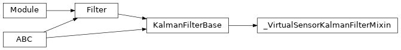

diffbayes.filters._virtual_sensor_kalman_filter_mixin¶
Private module; avoid importing from directly.
Module Contents¶
Classes¶
Identity measurement model. For use with our virtual sensor Kalman filters, which |
|
Base class for a generic Kalman-style filter. Parameterizes beliefs with a mean |
-
class
diffbayes.filters._virtual_sensor_kalman_filter_mixin._IdentityMeasurementModel(*, state_dim)¶ Bases:
diffbayes.base.KalmanFilterMeasurementModel
Identity measurement model. For use with our virtual sensor Kalman filters, which assume that the “observation” of the system is in the state space.
Possible extension to consider in the future: we could very reasonably have both a virtual sensor and a measurement model, which each map to a latent space.
-
scale_tril:types.ScaleTrilTorch¶ Lower-triangular uncertainty term, with shape
(N, state_dim, state_dim). This should be set externally.- Type
torch.Tensor
-
forward(self, *, states: types.StatesTorch) → Tuple[types.ObservationsNoDictTorch, types.ScaleTrilTorch]¶ Observation model forward pass, over batch size
N.- Parameters
states (torch.Tensor) – States to pass to our observation model. Shape should be
(N, state_dim).- Returns
Tuple[torch.Tensor, torch.Tensor] – tuple containing expected observations and cholesky decomposition of covariance. Shape should be
(N, M).
-
jacobian(self, *, states: types.StatesTorch) → torch.Tensor¶ To avoid using autograd for computing our models Jacobian, we can directly return identity matrices.
- Parameters
states (torch.Tensor) – Current state, size
(N, state_dim).- Returns
torch.Tensor – Jacobian, size
(N, observation_dim, state_dim)
-
-
class
diffbayes.filters._virtual_sensor_kalman_filter_mixin._VirtualSensorKalmanFilterMixin(*, dynamics_model: DynamicsModel, virtual_sensor_model: VirtualSensorModel, **kwargs)¶ Bases:
diffbayes.base.KalmanFilterBaseBase class for a generic Kalman-style filter. Parameterizes beliefs with a mean and covariance.
Subclasses should override _predict_step() and _update_step().
-
virtual_sensor_model¶ Virtual sensor model.
-
_update_step(self, *, observations: types.ObservationsTorch) → None¶ Kalman filter measurement update step.
Nominally, computes $mu{t | t}$, $Sigma{t | t}$ from $mu{t | t - 1}$, $Sigma{t | t - 1}$.
Updates
self.belief_meanandself.belief_covariance.- Keyword Arguments
observations (dict or torch.Tensor) – Observation inputs.
-
virtual_sensor_initialize_beliefs(self, *, observations: types.ObservationsTorch)¶ Use virtual sensor model to intialize filter beliefs.
- Parameters
observations (dict or torch.Tensor) – observation inputs. should be either a dict of tensors or tensor of shape
(N, ...)
-